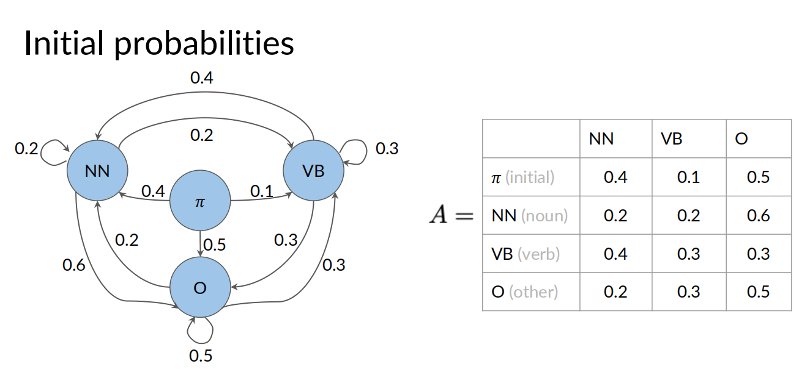
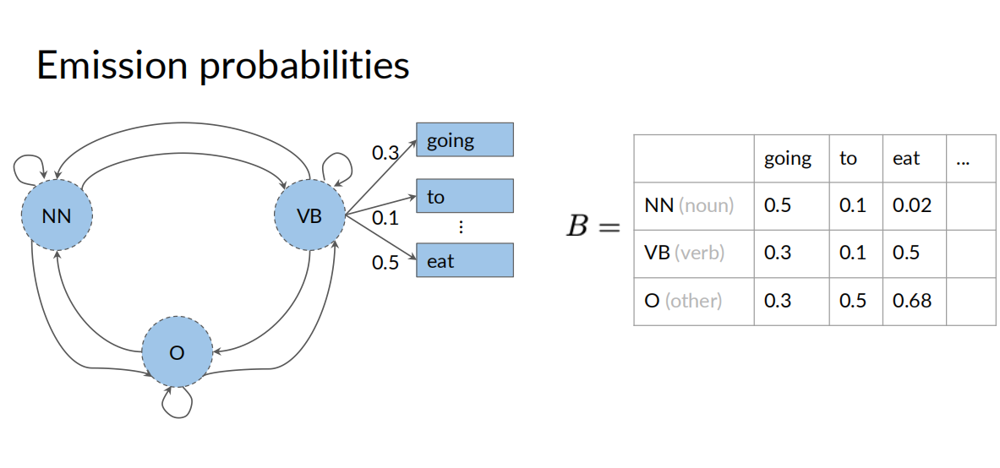
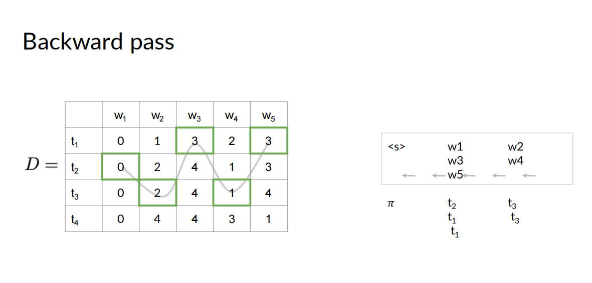
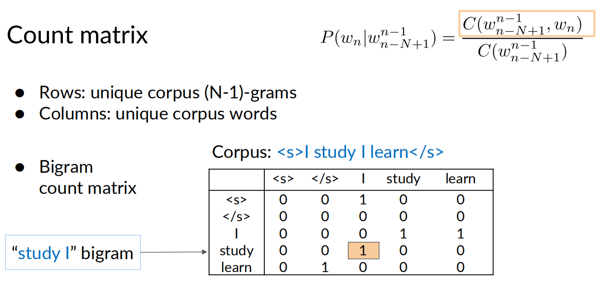
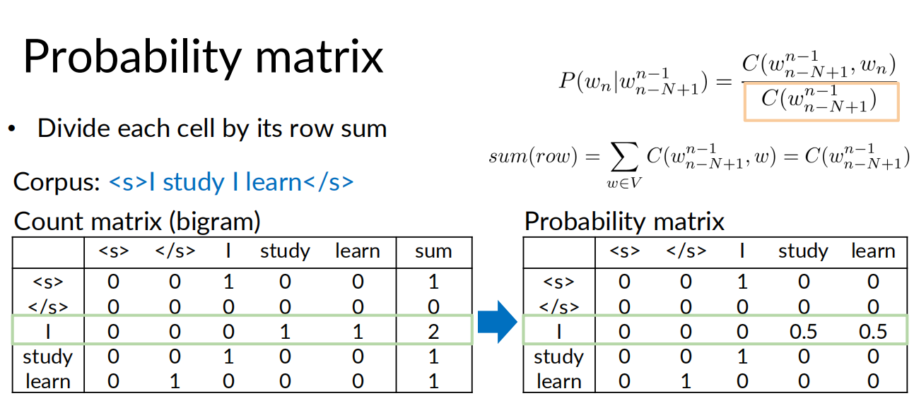
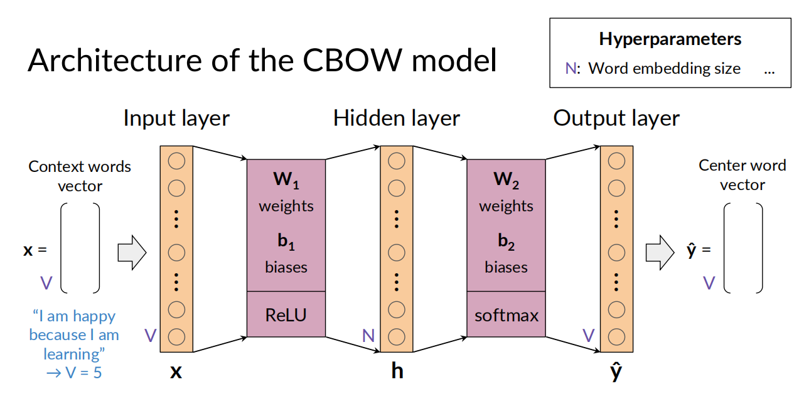
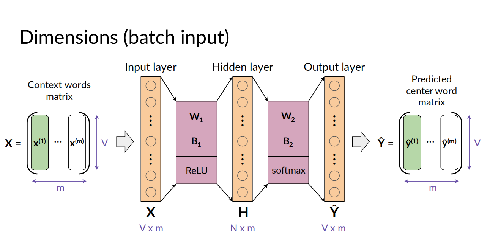
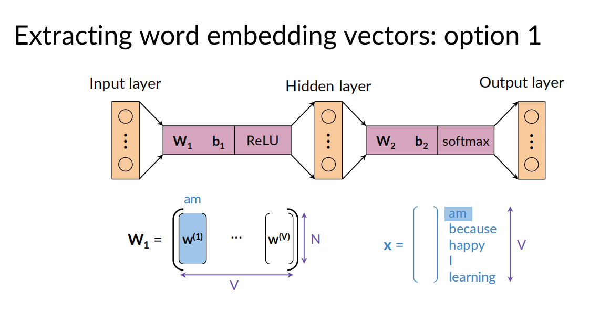
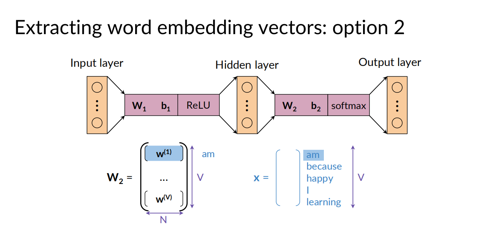
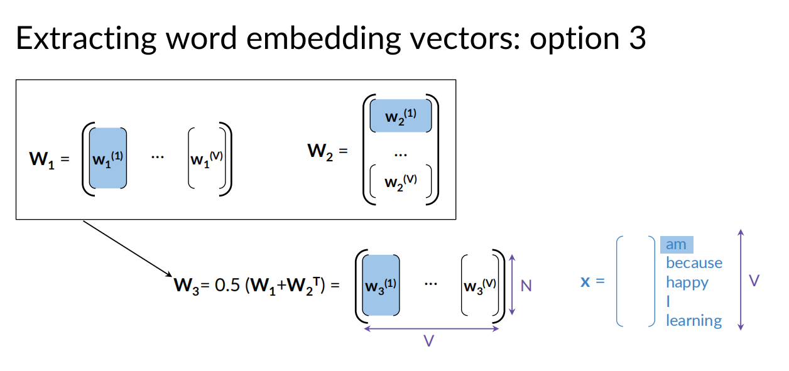

2.Probabilistic Models
- Week1 Autocorrect
- How to work
- 最小编辑距离
- PA(Autocorrect)
- 最短编辑距离的计算
- Week2 Markov Chains and POS Tags
- Part of speech (POS) tagging
- Markov chains
- 隐马尔可夫模型(HMM)
- 计算转移矩阵A(transition matrix)
- 计算发射矩阵B(emission matrix)
- Viterbi 算法
- Week3 Autocomplete and Language Models
- N-grams
- Sequence Probabilities
- The N-gram Language Model
- 语言模型的评价
- 词汇表之外的词
- Smoothing
- PA(Auto-Complete)
- Word embedding
- CBOW (Continuous Bag-of-Words Model)
- Data preparation
- 训练模型
- 获取词嵌入向量
- 词向量的评估
Week1 Autocorrect
文本的自动纠错
How to work
1. Identify a misspelled word
本节只考虑简单的拼写错误：在给定的字典中找不到的单词。其他的错词，比如根据上下文推断出来的错误，要先不考虑。
2. Find strings n edit distance away
长度为n的编辑距离，编辑方法包括: insert,delete,switch(swap 2 adjacent letters),replace
这步要找到所有可能的n-edit distance的单词，通常n在1-3之间
3. Filter candidates
过滤2中找到的所有词，删掉不在字典中的词
- Calculate word probabilities 计算每一个词在整个语料库中出现的概率 （感觉这个方法比较粗糙）
最小编辑距离
编辑距离（Edit Distance），又称Levenshtein距离，是指两个字串之间，由一个转成另一个所需的最少编辑操作次数。许可的编辑操作包括将一个字符替换成另一个字符，插入一个字符，删除一个字符。一般来说，编辑距离越小，两个串的相似度越大。对于不同的操作类型，可以使用不同的操作次数，比如插入一次算一个操作次数，替换一次算2个操作次数，这是可以自定义的。
计算最小编辑距离的方法就是DP
PA(Autocorrect)
- 预处理
- 从语料库获取数据，获取每个单词将其转为小写
- 计算每个单词的计数
- 计数每个单词的出现频率 \(P(w_i) = \frac{C(w_i)}{M}\) where \(C(w_i)\) is the total number of times \(w_i\) appears in the corpus. \(M\) is the total number of words in the corpus. M中包含重复单词的重复计数
- 单词处理（插入/交换相邻/删除/替换），分为一次处理和二次处理
- 拼写改正的推荐单词的优先级
- If the word is in the vocabulary, suggest the word.
- Otherwise, if there are suggestions from
edit_one_letterthat are in the vocabulary, use those. - Otherwise, if there are suggestions from
edit_two_lettersthat are in the vocabulary, use those. - Otherwise, suggest the input word.*
- The idea is that words generated from fewer edits are more likely than words with more edits.
最短编辑距离的计算
使用DP来计算，用来衡量纠正后的单词和纠正之前的差距
def min_edit_distance(source, target, ins_cost = 1, del_cost = 1, rep_cost = 2):
'''
Input:
source: a string corresponding to the string you are starting with
target: a string corresponding to the string you want to end with
ins_cost: an integer setting the insert cost
del_cost: an integer setting the delete cost
rep_cost: an integer setting the replace cost
Output:
D: a matrix of len(source)+1 by len(target)+1 containing minimum edit distances
med: the minimum edit distance (med) required to convert the source string to the target
'''
# use deletion and insert cost as 1
m = len(source)
n = len(target)
#initialize cost matrix with zeros and dimensions (m+1,n+1)
D = np.zeros((m+1, n+1), dtype=int)
### START CODE HERE (Replace instances of 'None' with your code) ###
# Fill in column 0, from row 1 to row m, both inclusive
for row in range(1,m+1): # Replace None with the proper range
D[row,0] = D[row-1,0]+del_cost
# Fill in row 0, for all columns from 1 to n, both inclusive
for col in range(1,n+1): # Replace None with the proper range
D[0,col] = D[0,col-1]+ins_cost
# Loop through row 1 to row m, both inclusive
for row in range(1,m+1):
# Loop through column 1 to column n, both inclusive
for col in range(1,n+1):
# Intialize r_cost to the 'replace' cost that is passed into this function
r_cost = D[row-1,col-1] + (rep_cost if source[row-1]!=target[col-1] else 0)
# Update the cost at row, col based on previous entries in the cost matrix
# Refer to the equation calculate for D[i,j] (the minimum of three calculated costs)
D[row,col] = min(r_cost, D[row-1,col]+del_cost, D[row,col-1]+ins_cost)
# Set the minimum edit distance with the cost found at row m, column n
med = D[m,n]
### END CODE HERE ###
return D, med
Week2 Markov Chains and POS Tags
Part of speech (POS) tagging
词性标注
对一段文字的每个词进行标注，这些词可能直接来自于字典，或是有字典中的词添加特殊词性的前后缀得来
可以用以上方式对每个词做出一个标注
Markov chains
马尔可夫链（Markov Chain）是一种随机过程模型，描述了系统在离散时间内从一个状态转移到另一个状态的概率。其核心特性是马尔可夫性质，即系统的未来状态仅依赖于当前状态，与过去的状态无关。这种“无记忆性”使得马尔可夫链在概率论、机器学习和数据建模中具有广泛的应用。
马尔可夫链由以下要素组成：
-
状态空间：系统可能的所有状态集合。
-
转移概率矩阵：描述从一个状态转移到另一个状态的概率。例如，矩阵中的元素 (P(i, j)) 表示从状态 (i) 转移到状态 (j) 的概率。
-
初始状态分布：系统在初始时刻的状态概率分布。
马尔可夫链的一个重要性质是，当转移概率矩阵满足一定条件时，经过多次状态转移，系统的状态分布会收敛到一个稳定的分布，与初始状态无关。
举例，转移矩阵如下：
一行表示从左侧的状态转移到右侧各个状态的概率，一行之和总为1。\(\pi\) 表示初始状态

state : \(Q=\{q_1,q_2,...,q_N\}\)
隐马尔可夫模型(HMM)
HMM 中定义了： 发射概率（Emission Probability）描述了在特定的隐藏状态下生成观测值的可能性。
在隐马尔可夫模型中，发射概率通常由一个发射矩阵表示，矩阵的行代表隐藏状态，列代表观测值，每个元素表示在特定隐藏状态下观测到特定观测值的概率
以下 going/to/eat 这些是可观测的，而动词/名词这些概念是隐状态

转移概率(是离散的(Discrete))，只与前一个状态有关\ \(P(q_t|q_{t-1})=P(q_t|q_q,...,q_{t-1},y_1,...,y_{t-1})\)
发射概率 (可以是连续的，可以是离散的), 只与前一个隐状态有关\ \(P(y_t|q_t)=P(q_t|q_q,...,q_{t-1},q_t,y_1,...,y_{t-1})\)
当发射概率是离散是，可以得到一个发射矩阵 $$ \text{Transition matrix} $$ $$ {B=\begin{Bmatrix} b_{1,1} & \dots & b_{1,V}\ \vdots & \ddots & \vdots \ b_{N,1} & \dots & b_{N,V} \end{Bmatrix}} $$
发射矩阵描述的是，从某个隐状态对应一个观测值的概率。
计算转移矩阵A(transition matrix)
根据语料库，计算转移矩阵的每一项，用如下公式：
- count occurrences of tag pairs \(C(t_{i-1},t_i)\)
- calculate probability \(P(t_i|t_{i-1})=\frac{C(t_{i-1},t_i)+\epsilon}{ {\textstyle \sum_{j=1}^{N}} C(t_{i-1},t_j)+N*\epsilon}\)
\(\epsilon\) 是一种避免除以0的平滑技术
计算发射矩阵B(emission matrix)
方法与计算转移矩阵类似，把每项换成 \(C(t_i,w_i)\)\ \(P(w_i|t_i)=\frac{C(t_i,w_i)+\epsilon}{ {\textstyle \sum_{j=1}^{V}} C(t_i,w_j)+N*\epsilon}=\frac{C(t_i,w_i)+\epsilon}{ C(t_i)+N*\epsilon}\)
Viterbi 算法
维特比算法是用DP来解决hmm的预测问题（或称为解码问题）的，即给定模型 \(\lambda=(A,B,\pi)\)和观察序列\(O=(o_1,o_2,...,o_T)\),求对给定观察序列条件概率\(P=(I|O)\)最大的状态序列\(I=(i_1,i_2,...,i_T)\)
预测问题是hmm模型的3个基本问题之一，其他两个问题课程中没提到，可以参考<<统计学习方法>>。
为了求解这个问题，引入两个辅助矩阵，C和D，它们维度相同，都是N行（隐状态个数），T列（观测序列个数）。\ 其中\(c_{i,j}\) 表示给定模型\(\lambda\)，当前j项的观察序列为\(O=(o_1,o_2,...,o_j)\)，第\(j\)个观测项的对应的隐状态为\(i\)的最大概率是多少。\ \(d_{i,j}\)表示取到最大值为\(c_{i,j}\)的路径（从i-1）对应的状态值，即从在第j-1步时，从\(d_{i,j}\)状态到达第j步的i状态能够达到最大的概率\(c_{i,j}\)
Viterbi 算法分成3步 1. 初始化
计算第一列: \ \(c_{1,i}=\pi_{i}*b_{i,cindex(w_1)}\)， 其中\(cindex(w_1)\)表示w1对应的观测值的下标 \ $d_{1,i}=0，表示前一项都是0（ \(\pi\) 状态)
-
向前递推
对每个\(1\le i\le N\) 和\(j\gt 0\)
\(c_{i,j}=\max\limits_{1\le k\le N}c_{k,j-1}\cdot a_{k,i}\cdot b_{i,\mathrm{cindex}(w_j)}\) \ \(d_{i,j}=\argmax\limits_{1\le k\le N}c_{k,j-1}\cdot a_{k,i}\cdot b_{i,cindex(w_j)}\)
-
反向递推
根据D矩阵，从最后一列向前依次递推，获取最大每个i对应的最大概率的隐状态下标

实际计算过程中使用log函数，避免相乘之后的数值太小而丢失精度
\(log(c_{i,j})=\max\limits_{1\le k\le N}log(c_{k,j-1})+ log(a_{k,i}) +log(b_{i,\mathrm{cindex}(w_j)})\)
Week3 Autocomplete and Language Models
N-grams
N-gram是一种基于统计语言模型的算法，用于预测文本中的单词，其中 N 一般指的是序列中的单词数量。其基本思想是将文本内容进行大小为 N 的滑动窗口操作来计算概率。
- N=1：unigram
- N=2: bigram
- N=3: trigram
记号： \(w_1^m=w_1w_2...w_m\) 表示从单词\(w_1\)到\(w_m\)这连续的m个单词
unigram的概率 \(P(w)=\frac{C(w)}{m}\) \ bigram的概率 \(P(y|x)=\frac{C(xy)}{C(x)}\) 其中 C(x) 表示预料中x出现的次数 \ trigram的概率 \(P(w_3|w_1^2)=\frac{C(w_1^2w_3)}{C(w_1^2)}=\frac{C(w_1^3)}{C(w_1^2)}\) 其中 C(x) 表示预料中x出现的次数
一般的， \(P(w_n|w_1^{n-1})=\frac{C(w_1^{n-1}w_N)}{C(w_1^{N-1})}=\frac{C(w_1^N)}{C(w_1^{N-1})}\)
Sequence Probabilities
考虑一句话出现的概率，应该等于一组条件概率的乘积，如： \(\text{P(the teacher drinks tea)=P(the)P(teacher|the)P(drinks|the teacher)P(tea|the teacher drinks)}\)，其中\(\text{P(tea|the teacher drinks)=P(the teacher drinks tea)/P(the teacher drinks)}\)
而当这句话越来越长时，P(the teacher drinks tea)和P(the teacher drinks)都可能为0，使得计算出现问题，此时可以考虑使用近似值\(P(tea|\hbox{the teacher drinks})\approx P(tea|drinks)\)，这里使用了bigram近似，或者使用其他N-gram做近似处理。
对于一个句子的开头和结尾的处理，可以为语料库的每句话，加上一个开始符 \ 和结束符 \
在实际操作中开始符可能是多个（bigram是一个，trigram是二个...）,结束符只需要一个就够了
\ the teacher drinks tea \<\s>
在bigram下，整句话出现的概率可以表示为 \(P(the|\hbox{<s>})P(teacher|the)P(drinks|teacher)P(tea|drinks)P(\hbox{</s>}|tea)\)
The N-gram Language Model
两个矩阵，定义如下，count matrix / probability matrix


有了概率矩阵，就能做两件事了 - 计算一句话出现的概率 - 给定一个句子开头，预测 next word
一个句子的概率由下式近似给出 $$ P(w_1^{n})\approx \prod_{i=1}^{n} P(w_i|w_{i-1}) $$ 计算时，通常使用它的对数形式，避免精度问题 $$ log(P(w_1^{n}))\approx \sum_{i=1}^{n} log(P(w_i|w_{i-1})) $$
生成式语言模型的基本算法 1. Choose sentence start 2. Choose next bigram starting with previous word 3. Continue until \ is picked
语言模型的评价
划分训练集/验证集/测试集
困惑度(Perplexity)
困惑度有如下定义：
$$ PP(W) = P(s_1,s_2,...s_m)^{-\frac{1}{m}} $$
其中W表示测试集包含的所有m个句子s
m是测试集W中包含的所有词的数量（包含\,不含\）
为何句子的数量和词的数量都是m？？
对于一个句子 $$ PP(W_i) = \sqrt[m]{\prod_{j=1}^{|s_i|} \frac{1}{P(w_j^{(i)}|w_{j-1}^{(i)})}} $$ $$ w_j^{(i)} -> \text{ j-th word in i-th sentence} $$
将m个句子合起来， $$ PP(W) = \sqrt[m]{\prod_{i=1}^{m}\prod_{j=1}^{|s_i|} \frac{1}{P(w_j^{(i)}|w_{j-1}^{(i)})}} =\sqrt[m]{\prod_{i=1}^{m} \frac{1}{P(w_i|w_{i-1})}}$$ $$ w_i -> \text{ i-th word in test set} $$
困惑度的log形式 $$ logPP(W)=-\frac{1}{m}\sum_{i=1}^{m}\log_2(P(w_i|w_{i-1})) $$
更小困惑度代表更优的模型表现，大约20~60的困惑度是比较好的模型了。
词汇表之外的词
随着模型规模的不断扩大，出现了一种新的问题：OOV（Out-of-Vocabulary，词汇库外）问题。OOV问题是指模型在处理文本数据时，遇到了未在词汇库中出现过的词汇，导致模型无法理解这些词汇，从而影响了模型的性能。
对于这些词，我们在语料库中，将其替换为一个特殊的Tag: \
如何选择单词表，可以有两种原则： - 制定一个最小频率，在corpus中的词的频率需要达到一个数值，才能放入单词表 - 制定|V|的最大值，优先选择频率大的单词放入
Smoothing
训练集中，在计算条件概率中可能会出现分母为0的场景，如：N-grams made of known words still might be missing in the training corpus
此式子右边分子分母都可能为0，同样在处理时引入Laplacian smoothing
- Add-one smoothing
- Add-k smoothing
另外两种smoothing的方法： backoff/插值
PA(Auto-Complete)
- 预处理数据
- 切分句子
- tokenize (nltk.word_tokenize)
- 所有单词计数
- 按单词频率超过n的单词构造单词表
- 替换非单词表的单词为unk
- 切分数据集为训练集和测试集
- 其中单词频率和选择是在训练集上进行的，但单词替换是对训练集+测试集
- 按照 Add-k smoothing 计算 \(P(w_n|w_{n-1})\)
- 评估模型，计算困惑度
- 计算补全的词，从概率最高的单词：
def suggest_a_word(previous_tokens, n_gram_counts, n_plus1_gram_counts, vocabulary, end_token='<e>', unknown_token="<unk>", k=1.0, start_with=None):
"""
Get suggestion for the next word
Args:
previous_tokens: The sentence you input where each token is a word. Must have length >= n
n_gram_counts: Dictionary of counts of n-grams
n_plus1_gram_counts: Dictionary of counts of (n+1)-grams
vocabulary: List of words
k: positive constant, smoothing parameter
start_with: If not None, specifies the first few letters of the next word
Returns:
A tuple of
- string of the most likely next word
- corresponding probability
"""
# length of previous words
n = len(list(n_gram_counts.keys())[0])
# append "start token" on "previous_tokens"
previous_tokens = ['<s>'] * n + previous_tokens
# From the words that the user already typed
# get the most recent 'n' words as the previous n-gram
previous_n_gram = previous_tokens[-n:]
# Estimate the probabilities that each word in the vocabulary
# is the next word,
# given the previous n-gram, the dictionary of n-gram counts,
# the dictionary of n plus 1 gram counts, and the smoothing constant
probabilities = estimate_probabilities(previous_n_gram,
n_gram_counts, n_plus1_gram_counts,
vocabulary, k=k)
# Initialize suggested word to None
# This will be set to the word with highest probability
suggestion = None
# Initialize the highest word probability to 0
# this will be set to the highest probability
# of all words to be suggested
max_prob = 0
### START CODE HERE ###
# For each word and its probability in the probabilities dictionary:
for word, prob in probabilities.items(): # complete this line
# If the optional start_with string is set
if start_with: # complete this line with the proper condition
# Check if the beginning of word does not match with the letters in 'start_with'
if not word.startswith(start_with): # complete this line with the proper condition
# if they don't match, skip this word (move onto the next word)
continue
# Check if this word's probability
# is greater than the current maximum probability
if prob > max_prob: # complete this line with the proper condition
# If so, save this word as the best suggestion (so far)
suggestion = word
# Save the new maximum probability
max_prob = prob
### END CODE HERE
return suggestion, max_prob
Word embedding
词表示的方法 - integers 不能体现词之间的内在关系 - one hot vectors 不能体现词之间的内在关系，向量空间太大 - word embeddings
一些基础的word embedding方法 - word2vec(Google) - GloVe(Stanford) - fastText(Fackbook)
一些高级的word embedding方法 - BERT (Google) - ELMo - GPT
CBOW (Continuous Bag-of-Words Model)
CBOW的基本思想是，给定一个单词的上下文（即窗口内的其他单词），预测该单词本身。例如，对于句子“The cat climbed up the tree”，如果窗口大小为5，那么当中心单词为“climbed”时，上下文单词为“The”、“cat”、“up”和“the”。CBOW模型要求根据这四个上下文单词，计算出“climbed”的概率分布。
Data preparation
- Cleaning and tokenization
- 大小写转换，标点处理，特殊字符的处理
- Sliding window of words
- 通过滑窗技巧，提取出每个中心词和滑窗中周围的词
# Define the 'get_windows' function
# C 是窗口中单词的数量
def get_windows(words, C):
i = C
while i < len(words) - C:
center_word = words[i]
context_words = words[(i - C):i] + words[(i+1):(i+C+1)]
yield context_words, center_word
i += 1
效果大概这样：
Context words vector: [0.25 0.25 0. 0.5 0. ]
Center word vector: [0. 0. 1. 0. 0.]
Context words vector: [0.5 0. 0.25 0.25 0. ]
Center word vector: [0. 1. 0. 0. 0.]
Context words vector: [0.25 0.25 0.25 0. 0.25]
Center word vector: [0. 0. 0. 1. 0.]
训练模型
模型是一个3层的全连接神经网络，输入就是上面计算出来的Context words vector，输出层的期望是Center word vector，两个激活函数分别是Relu和softmax, 如下图：

批量训练的版本为：

损失函数，使用交叉熵损失函数
训练的过程就是普通的神经网络训练方式：方向传播 + 梯度下降的方式
获取词嵌入向量
根据上面的模型计算出一组神经网络的参数 \([W_1,b_1,W_2,b_2]\) \ 如何根据这种参数生成词嵌入向量呢？有三种方式: - \(W_1\) - \(W_2\) - \(0.5(W_1+W_2^T)\)



词向量的评估
Intrinsic 和 Extrinsic 通常指两种不同的评估方式
-
Intrinsic（内在评估）
-
目标：直接、独立地评估词向量本身的质量，不依赖具体下游任务。
- 常见方法：
- 词语相似度/相关性数据集（如 WordSim-353、SimLex-999、MEN）：计算词向量的余弦相似度，与人工标 - 注的相似度做相关性（Spearman/Pearson）。
- 类比任务（Mikolov analogies，例如 king - man + woman ≈ queen）：测试向量空间的几何结构是否 - 表达语义/语法规律。
- 最近邻检查、聚类纯度、语义类别一致性。
- 语言学 probing（例如利用线性分类器探测是否编码了词性、形态信息）。
- 优点：快速、成本低、可控变量多（可以只比较嵌入差异）。
-
局限：与实际任务表现不一定强相关；可能受评测集题型偏好影响（如过度重视几何线性性质）。
-
Extrinsic（外在评估）
- 目标：把词向量用于真实的下游任务，观察对任务性能的影响。
- 常见任务：
- 文本分类、情感分析
- 序列标注（NER、POS 标注）
- 机器翻译、问答、信息检索
- 实践方式：
将 CBOW 词向量作为特征输入下游模型（可选择冻结或微调），比较不同嵌入对最终指标（准确率、F1、BLEU 等）的影响。
- 优点：直接反映对业务或应用的价值，综合考虑与数据分布、模型结构的互动。
- 局限：成本高、变量多（模型结构、训练策略、数据规模等），难以隔离“词向量本身”的贡献。